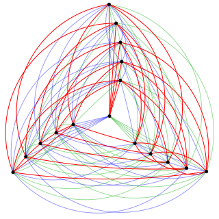

← Back to Home
Undergraduate Projects
- The sum-product problem for small sets
- Computations and observations on congruence covering systems
- The pigeonhole principle and multicolor Ramsey numbers
- Schur’s theorem in integer lattices
- New and old results in Ramsey theory and additive combinatorics (Honors Thesis)

A 3-coloring of K₁₆ with no monochromatic K₃.